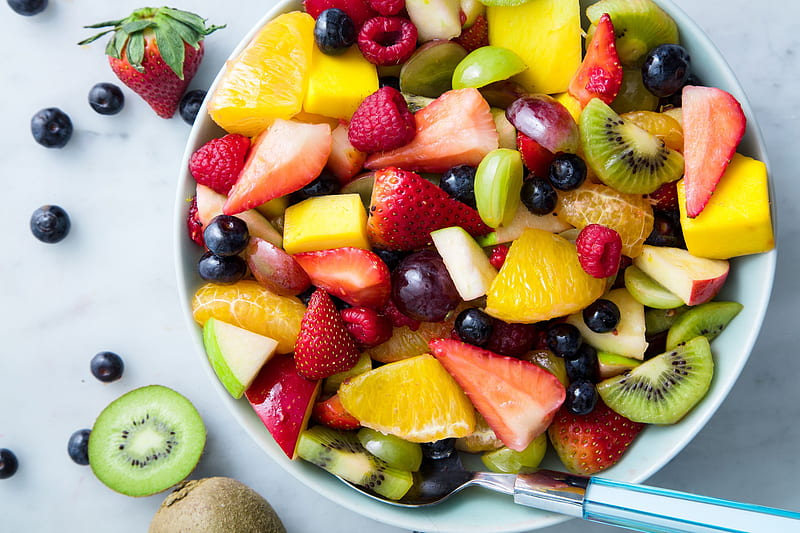
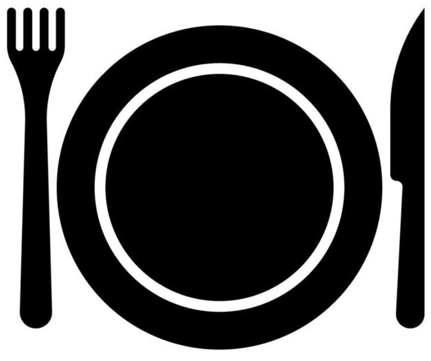
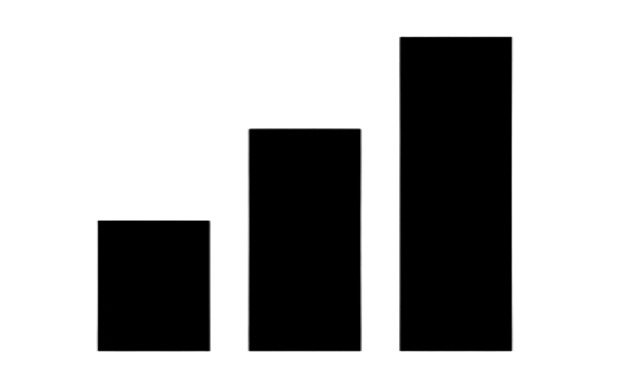

Ensalada de frutas
En esta receta de Taste of me queremos enseñarte una forma muy sencilla de preparar ensalada de frutas que haran de tu paladar una explosion de sabores.

| 4 Comensales |  Merienda |  Dificultad facil |
|---|
Instrucciones
En un tazón mezcla la Leche condensada, la Crema de leche hasta integrar bien y reserva dos cucharadas de la salsa en un tazón aparte, por que la vas a necesitar para decorar.
En el fondo de 4 copas o recipientes, pon la mezcla cremosa en partes iguales, encima de esta crema coloca el melón, seguido del kiwi, el mango, las rodajas de banano y las fresas todo en partes iguales.
Por último, baña con la mezcla cremosa que reservaste y sirve.